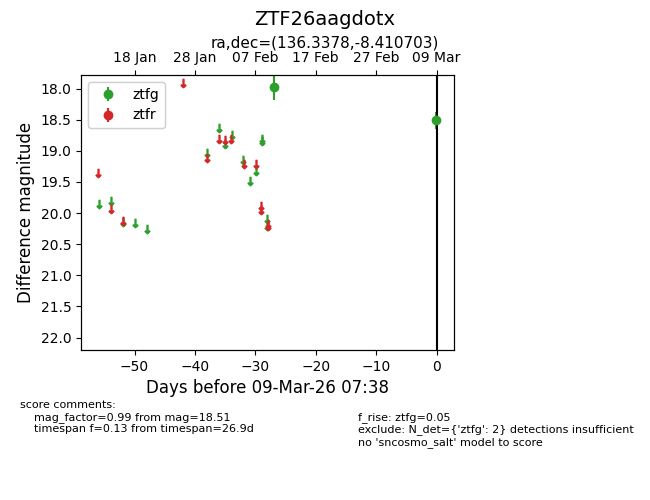
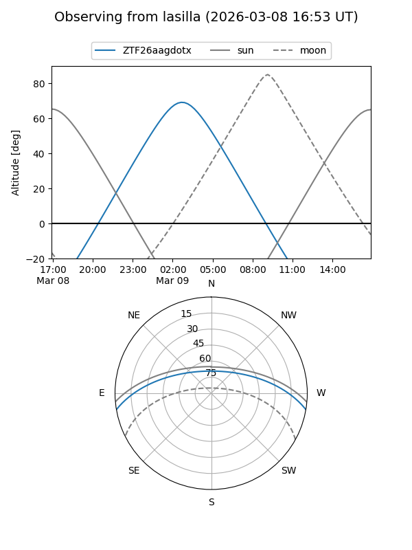
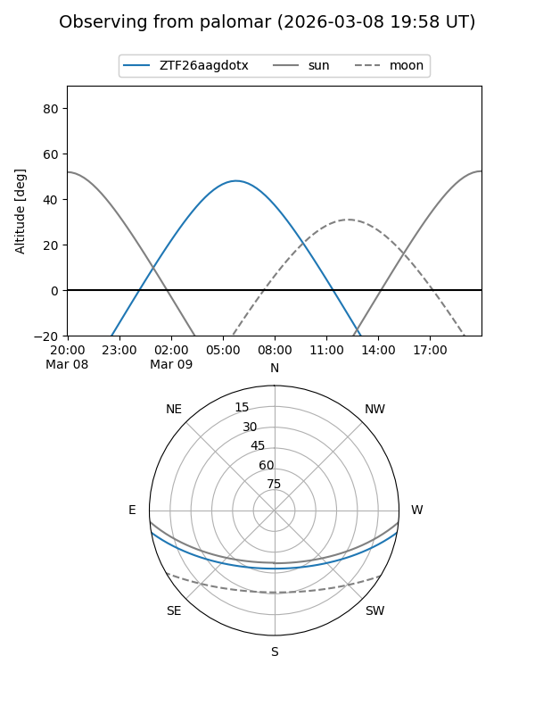

ZTF26aagdotx
Target ZTF26aagdotx at 2026-03-09 07:39
Aliases and brokers:
FINK: link
Lasair: link
ALeRCE: link
alt names
ZTF26aagdotx (ztf,fink_ztf)
Coordinates:
equatorial (ra, dec) = 136.3378,-8.41070
equatorial (HMS+DMS) = 09:05:21.08,-08:24:38.53
galactic (l, b) = (237.6025,+24.76901)
Flags:
Photometry:
last ztfg=18.51
2 ztfg detections
Lightcurve

Visibility


Additional plots